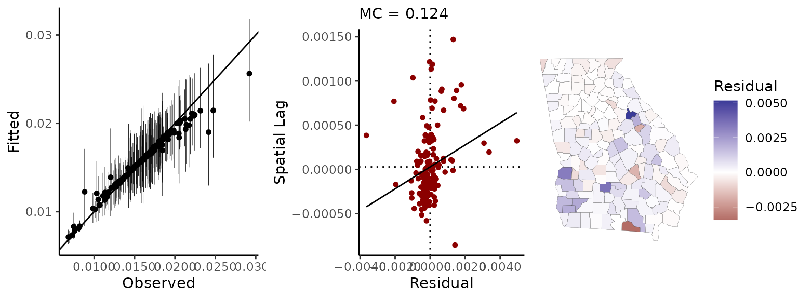

Measuring and visualizing spatial autocorrelation
Connor Donegan
September 13, 2021
Source:vignettes/measuring-sa.Rmd
measuring-sa.RmdThis vignette walks through exploratory spatial analysis functionality in the geostan package, which includes methods for measuring and visualizing spatial autocorrelation. The last section introduces a set of diagnostic plots for spatial models.
Getting started
From the R console, load geostan and the georgia data set.
georgia is a simple features (sf) object with estimates of county population characteristics from the American Community Survey (ACS) for the five year period spanning 2014-2018. Their corresponding standard errors are also here. The column college contains ACS estimates for the percent of the population age 25 and older that has obtained a college degree or higher; the standard errors of the survey estimates are in the column named college.se.
Spatial diagnostic summary
If we pass these estimates and the simple features object to sp_diag function, it returns a histogram, Moran scatter plot, and map of the estimates:
sp_diag(georgia$college, georgia, name = "College (%)")
The Moran plot is a visualization of the degree of spatial autocorrelation (SA): on the horizontal axis are the college estimates while the vertical axis represents the mean neighboring value. The Moran coefficient, an index of SA, is printed at the top (MC=0.42) The expected value of the MC under no spatial autocorrelation is \(-1/(n-1)\) (Chun and Griffith 2013).
The map shows that the contrast between the greater Atlanta metropolitan area and the rural counties is a prominent, if not the predominant, spatial pattern. It may help to compare the mean of the variable (which is just 18%):
mean(georgia$college)
#> [1] 18.1956with a population-weighted mean (30%):
weighted.mean(georgia$college, w = georgia$population)
#> [1] 30.66856The Moran scatter plot
We can create the Moran plot ourselves using the moran_plot function and a spatial connectivity matrix. The shape2mat function takes a spatial object (simple features or spatial polygons) and creates a sparse matrix representation of the neighborhood structure: counties are considered ‘neighbors’ if their borders touch each other.1 To reproduce the Moran plot given by sp_diag, we need to provide a row-standardized spatial weights matrix. We do this be setting the second argument, style, to “W”.
C <- shape2mat(georgia, style = "W")
moran_plot(georgia$college, C)Similarly, we can calculate the Moran coefficient using mc:
mc(georgia$college, C)
#> [1] 0.422Under particular conditions (the variable has been centered by subtracting its own mean from each value, and a row-standardized weights matrix is used), the Moran coefficient is equivalent to the slope of the regression line on the Moran plot.
If we use a binary spatial weights matrix, the vertical axis will show the sum of surrounding values:
moran_plot(georgia$college, shape2mat(georgia, "B"))While positive and negative neighboring values still cancel out as previously, using a binary matrix means that counties with more neighbors contribute more to the MC.
The quadrants of the Moran plot are helpful for classifying observations. The first (top right) quadrant represents counties with above-average values that are also surrounded by above-average values; the third (bottom left) quadrant contains low values surrounded by low values. Points in these quadrants contribute positively to the MC, and they represent positive spatial autocorrelation. The second (top left) and fourth quadrants represent negative spatial autocorrelation since they contain spatial outliers—high (or low) values surrounded by dissimilar values.
Local Indicators of Spatial Association
The lisa function calculates “local indicators of spatial association” (Anselin 1995). LISA values are closely related to the Moran plot. If we were to provide standardized values (z-scores) on the Moran plot, the LISA value would be equal to the product of each z-scores and their spatially lagged value. The lisa function returns the LISA values and indicates which quadrant of the Moran plot the point is found:
Li <- lisa(georgia$college, C)
head(Li)
#> Li type
#> 1 0.17326473 LL
#> 2 0.06529153 LL
#> 3 -0.10145498 LH
#> 4 4.26126631 HH
#> 5 -0.40938420 HL
#> 6 4.60294163 HH“HH” indicates a high value surrounded by high values; “LL” is a low surrounded by low values, and so on. LISAs can be particularly helpful for identifying observations that don’t conform to the expectation of positive spatial autocorrelation, which is embedded in many models. Its worth nothing that each of the LISA values (also known as local Moran’s I) contribute to the Moran coefficient:
Effective sample size
We can also consider what these spatial patterns mean in terms of the information content of our data; that is, the impact that spatial autocorrelation might have on the amount of evidence that can be garnered from this data in an analysis. This is often described as effective sample size (ESS).
The n_eff function provides an approximate measure of ESS for spatially autocorrelated data. Based on the simultaneous autoregressive (SAR) model (Griffith 2005), it requires a value of the SA parameter, \(\rho\), from the SAR model and the number of observations in our data set. We can get a rough measure of ESS for our ICE data using the following code:
rho <- aple(georgia$ICE, C)
n <- nrow(georgia)
ess <- n_eff(rho = rho, n = n)
c(nominal_n = n, rho = rho, ESS = ess)
#> nominal_n rho ESS
#> 159.00000 0.71800 21.69292This tells us that, given the degree of SA in the ICE estimates, our nominal sample size of 159 observations has about the same information content as 22 independent observations. This should provide some idea as to why it is so perilous to use conventional (non-spatial) statistical methods with spatial data. The odds of observing a strong correlation between any arbitrary pair of spatially patterned variables can be far greater than conventional methods report.
Model diagnostics
The sp_diag function can also be used to evaluate spatial models. One of the purposes of the function is to identify spatial patterns in the model residuals, because spatial autocorrelation violates a core assumption (independence) of conventional statistical models and because spatial patterns can provide valuable information that we should pay attention to.
To demonstrate, we first fit a (non-spatial) Poisson model to the Georgia male mortality data. The following code fits a log-linear Poisson model, and it models mortality rates for each county separately (that’s provided by the “random effects” argument: re ~ GEOID).
C <- shape2mat(georgia)
fit <- stan_glm(deaths.male ~ offset(log(pop.at.risk.male)),
data = georgia,
re = ~ GEOID,
family = poisson(),
C = C,
refresh = 0 # this line silences Stan's printing
)
#>
#> *Setting prior parameters for intercept
#> Distribution: normal
#> location scale
#> 1 -4.2 5
#>
#> *Setting prior parameters for alpha_tau
#> Distribution: student_t
#> df location scale
#> 1 10 0 3
#> Warning: Bulk Effective Samples Size (ESS) is too low, indicating posterior means and medians may be unreliable.
#> Running the chains for more iterations may help. See
#> https://mc-stan.org/misc/warnings.html#bulk-essFor a summary of model results:
print(fit)
#> Spatial Model Results
#> Formula: deaths.male ~ offset(log(pop.at.risk.male))
#> Partial pooling (varying intercept): ~GEOID
#> Spatial method (outcome): Exchangeable
#> Likelihood function: poisson
#> Link function: log
#> Residual Moran Coefficient: 0.0228525
#> WAIC: 1316.25
#> Observations: 159
#> Data models (ME): none
#> Inference for Stan model: foundation.
#> 4 chains, each with iter=2000; warmup=1000; thin=1;
#> post-warmup draws per chain=1000, total post-warmup draws=4000.
#>
#> mean se_mean sd 2.5% 25% 50% 75% 97.5% n_eff Rhat
#> intercept -4.178 0.001 0.021 -4.219 -4.192 -4.178 -4.164 -4.135 309 1.015
#> alpha_tau 0.247 0.000 0.016 0.218 0.236 0.247 0.258 0.280 4222 1.000
#>
#> Samples were drawn using NUTS(diag_e) at Mon Dec 27 21:50:35 2021.
#> For each parameter, n_eff is a crude measure of effective sample size,
#> and Rhat is the potential scale reduction factor on split chains (at
#> convergence, Rhat=1).The printed summary of results shows that the posterior probability distribution for the intercept, which in this case represents the mean log-mortality rate, is centered on \(-4.183\), which is a mortality rate of \(e^{-4.183} = 153\) per 10,000. The 2.5% and 97.5% columns provide the bounds on the 95% credible interval (CI) for each parameter; the CI for the intercept is [-4.22, -4.14].2
Provide the fitted model, fit, and the spatial data, georgia, to the sp_diag function to see a set of spatial model diagnostics:
sp_diag(fit, georgia) The point-interval plot on the left shows the raw mortality rates (the raw outcome data) on the x-axis, the fitted values on the y-axis, and a ‘perfect fit’ (slope = 1, intercept = 0) line for reference. We can see that a number of the fitted values have posterior means that deviate from the observations; but this “shrinkage” towards the mean is not necessarily a problem. In fact, it is often desirable insofar as it indicates that these are counties for which our data provide very little evidence as to what the risk of death is (i.e., the population is very small). (For an introductory discussion of information pooling and other topics as well, see McElreath (2016)).
The middle panel is a Moran scatter plot of the model residuals, and the map shows the mean residual for each county. The residuals have been taken at their marginal posterior means. However, there is more than one way to measure residual autocorrelation. For an alternative visualization that uses the entire posterior distribution of parameters and provides an estimate of the residual Moran coefficient that will match the printed model results above (MC = 0.022), try sp_diag(fit, georgia, mc_style = "hist").
In this case, there is a very small amount of residual autocorrelation, and the map indicates that this derives from a slight north-south/metropolitan-rural trend. The trend in the residuals helps us see that shrinking towards the mean mortality rate is less than ideal in this case because we can see that county mortality rates are higher in the southern half of the state than in the greater Atlanta metropolitan area.
We could extend this model by using one of geostan’s spatial models (see the examples in ?stan_car) or by adding one or more (substantively meaningful) covariates.
References
Anselin, Luc. 1995. “Local Indicators of Spatial Association—Lisa.” Georgaphical Analysis 27 (2): 93–115.
Chun, Yongwan, and Daniel A Griffith. 2013. Spatial Statistics and Geostatistics: Theory and Applications for Geographic Information Science and Technology. Sage.
Griffith, Daniel A. 2005. “Effective Geographic Sample Size in the Presence of Spatial Autocorrelation.” Annals of the Association of American Geographers 95 (4): 740–60.
McElreath, Richard. 2016. Statistical Rethinking: A Bayesian Course with Eexamples in R and Stan. CRC Press.
For the most part, users do not need to know anything about sparse matrix objects to work with them. Objects from the Matrix package can typically be treated like objects of class “matrix”. Sometimes, however, you may need to make an explicit call the the Matrix package to access its methods. For example,
colSums(C)will produce an error, butMatrix::colSums(C)will work as expected.↩Stan will print important warning messages when Markov chain Monte Carlo (MCMC) diagnostics indicate any cause for concern, such as “Bulk Effective Samples Size (ESS) is too low.” Looking at the printed results, we can see that we kept a total of 4,000 MCMC samples for inference. If we then look at the “n_eff” (i.e., ESS) column in the table of results, we see that the effective sample size is smaller that the nominal sample size of 4,000 (this is almost always the case, due to serial autocorrelation in the MCMC samples). To see diagnostics for all model parameters at once, you can use the following function calls:
rstan::stan_ess(fit$stanfit),rstan::stan_mcse(fit$stanfit), andrstan::stan_rhat(fit$stanfit)(and see the corresponding help pages,?rstan::stan_rhat.)↩